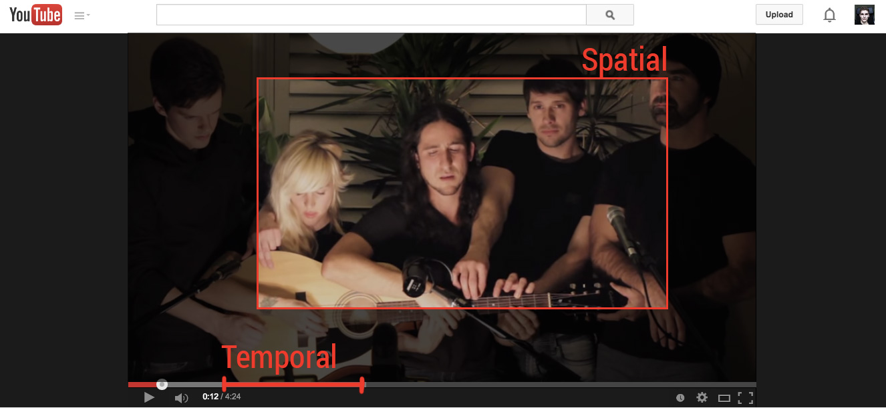
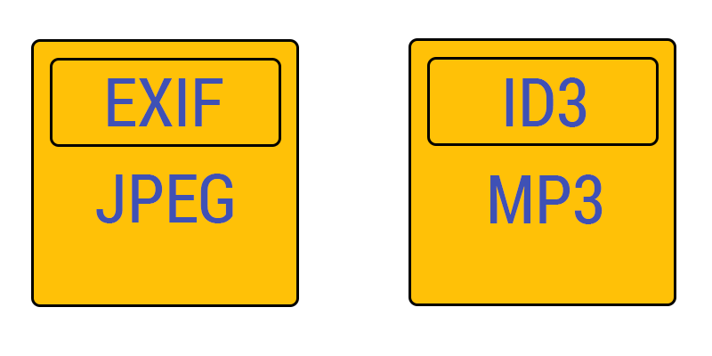

by Alexander “Surma” Surma, October 2014
Bundle of standards (mostly drafts) about different kinds of access to different kinds of media.
Who has not heared of getUserMedia() or Web Audio API?
February 3, 2013
October 9, 2014
getUserMedia()Web Audio API
Access fragments of media

Syntax:
t=<start>,<end>
Example:
t=20,1:24:30
t=npt:50
t=,22:10
Syntax:
xywh=<start>,<end>
Example:
xywh=160,120,320,240
xywh=pixel:160,120,320,240
xywh=percent:25,25,50,50
foo://example.com:8042/over/there?name=ferret#nose
\_/ \______________/\_________/ \_________/ \__/
| | | | |
scheme authority path query fragment
Individual resource (server-side implementation)
http://yt.com/FL3MqSKLNHY?t=20,30&xywh=160,120,320,240
http://yt.com/FL3MqSKLNHY#t=20,30&xywh=160,120,320,240
GET /video.ogv HTTP/1.1
Host: www.example.com
Accept: video/*
Range: t:npt=10-20
HTTP/1.1 206 Partial Content
Accept-Ranges: bytes, t, id
Content-Length: 3743
Content-Type: video/ogg
Content-Range: bytes 19147-22880/35614993
Content-Range-Mapping: { t:npt 9.85-21.16/0.0-653.79 }
= { bytes 19147-22880/35614993 }
Etag: "b7a60-21f7111-46f3219476580"
{binary data}
GET /video.ogv HTTP/1.1
Host: www.example.com
Accept: video/*
Range: t:npt=10-20;include-setup
HTTP/1.1 206 Partial Content
Accept-Ranges: bytes, t
Content-Length: 804020
Content-Type: multipart/byteranges;boundary=End
Content-Range-Mapping:
{ t:npt 10.0-20.0/0-38.3;include-setup } =
{ bytes 0-1650,1264525-2066894/4055466 0}
--End
Content-Type: video/webm
Content-Range: bytes 0-1650/4055466
{binary data}
--End
Content-Type: video/webm
Content-Range: bytes 1264525-2066894/4055466
{binary data}
Metadata of media

mediaResource = new MediaResource();
aSyncObject = mediaResource.createMediaResource(
"http://www.w3.org/.../MAWG-Stockholm-20090626.JPG",
metadataSources, 1);
metadataSources = new MetadataSource[2];
metadataSources[0] = new MetadataSource(
"http://www.w3.org/.../DC_example1.xml",
"dc"
);
metadataSources[1] = new MetadataSource(
"http://www.w3.org/.../MAWG-Stockholm-20090626.JPG",
"exif"
);
Capture media in forms with the <input> tag.
<input type="file" accept="image/*" capture>
<input type="file" accept="video/*" capture>
<input type="file" accept="audio/*" capture>
Access to multimedia streams from local devices
interface MediaStream : EventTarget {
sequence<MediaStreamTrack> getAudioTracks ();
sequence<MediaStreamTrack> getVideoTracks ();
MediaStreamTrack? getTrackById (DOMString trackId);
void addTrack (MediaStreamTrack track);
void removeTrack (MediaStreamTrack track);
MediaStream clone ();
readonly attribute DOMString id;
readonly attribute boolean ended;
attribute EventHandler onended;
attribute EventHandler onaddtrack;
attribute EventHandler onremovetrack;
};
[Constructor,
Constructor (MediaStream stream),
Constructor (MediaStreamTrackSequence tracks)]
interface NavigatorUserMedia {
void getUserMedia (
MediaStreamConstraints? constraints,
NavigatorUserMediaSuccessCallback successCallback,
NavigatorUserMediaErrorCallback errorCallback
);
};
{
mandatory: {
width: { min: 640 },
height: { min: 480 }
},
optional: [
{ width: 650 },
{ width: { min: 650 }},
{ frameRate: 60 },
{ width: { max: 800 }},
{ facingMode: "user" }
]
}
navigator.getUserMedia = (
navigator.getUserMedia ||
navigator.webkitGetUserMedia ||
navigator.mozGetUserMedia ||
navigator.msGetUserMedia
);
navigator.getUserMedia({
video: true,
audio: false
},
function(localMediaStream) {
var video = document.querySelector('video');
video.src = window.URL.createObjectURL(localMediaStream);
video.play();
setTimeout(function() {
localMediaStream.stop();
video.src = "";
}, 5000);
},
function(err) {
console.log("The following error occured: " + err);
});
[Constructor (MediaStream stream)]
interface MediaRecorder : EventTarget {
readonly attribute MediaStream stream;
readonly attribute RecordingStateEnum state;
void record (optional long? timeslice);
void stop ();
void pause ();
void resume ();
attribute EventHandler ondataavailable;
// ...
// It’s a huge interface
// ...
};
[Constructor(VideoStreamTrack track)]
interface ImageCapture : EventTarget {
readonly attribute PhotoSettingsOptions photoSettingsOptions;
readonly attribute VideoStreamTrack videoStreamTrack;
attribute EventHandler onphoto;
attribute EventHandler onerror;
attribute EventHandler onphotosettingschange;
attribute EventHandler onframegrab;
void setOptions (PhotoSettings? photoSettings);
void takePhoto ();
void getFrame ();
};
partial dictionary MediaStreamConstraints {
(boolean or MediaTrackConstraints) depth = false;
};
partial interface MediaStream {
sequence getDepthTracks ();
};
[Constructor]
interface AudioContext : EventTarget {
readonly attribute AudioDestinationNode destination;
readonly attribute AudioListener listener;
ScriptProcessorNode createScriptProcessor(...);
AnalyserNode createAnalyser();
GainNode createGain();
DelayNode createDelay(optional double maxDelayTime = 1.0);
BiquadFilterNode createBiquadFilter();
// ...
};
interface AudioNode : EventTarget {
void connect(
AudioNode destination,
optional unsigned long output = 0,
optional unsigned long input = 0
);
void disconnect(optional unsigned long output = 0);
readonly attribute AudioContext context;
readonly attribute unsigned long numberOfInputs;
readonly attribute unsigned long numberOfOutputs;
attribute unsigned long channelCount;
attribute ChannelCountMode channelCountMode;
attribute ChannelInterpretation channelInterpretation;
};
interface AudioListener {
attribute double dopplerFactor;
attribute double speedOfSound;
// Uses a 3D cartesian coordinate system
void setPosition(double x, double y, double z);
void setOrientation(double x, double y, double z, double xUp, double yUp, double zUp);
void setVelocity(double x, double y, double z);
};
interface OscillatorNode : AudioNode {
attribute OscillatorType type;
readonly attribute AudioParam frequency; // in Hertz
readonly attribute AudioParam detune; // in Cents
void start(double when);
void stop(double when);
void setPeriodicWave(PeriodicWave periodicWave);
};
by Alexander “Surma” Surma, October 2014